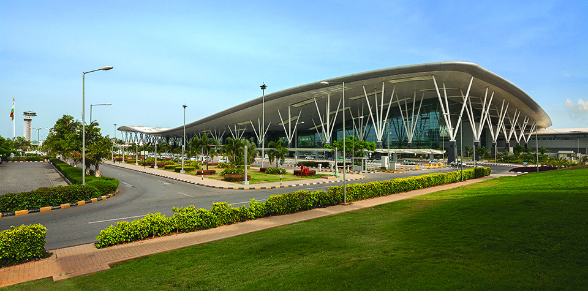

Bangalore
Bangalore is the capital of Indian state, Karnataka.
Bangalore also known as Bengaluru has gradually evolved from being called as the garden city to the silicon city of India. Bangalore is a metropolitan and a cosmopolitan city wherein people from all over the country come here, not just for jobs but also to have a better life. This makes Bangalore as the third most populous city and fifth-most populous urban mass in India. However, Bangalore is considered as one of India's most progressive and developed cities with a blissful benevolent climate. It is the second fastest-growing major metropolis in India having the headquarters of Indian technological organizations ISRO, Infosys, Wipro, HAL and is the home to many research and educational institutions in India such as Indian Institute of Management (IIMB), Indian Institute of Science (IISc). The city has a literacy rate of 89% and the language spoken is its native language Kannada. The entire city is connected through the Bangalore Metropolitan Transport Corporation making the travel simple.
Bangalore International Airport
Vidhana Soudha

Bannerghatta National Park
Tipu's Palace

Bangalore Palace

Lalbagh

Hogenakkal Falls
Nandi Hills
Bangalore International Airport
The airport consists of a single runway and passenger terminal, which handles both domestic and international operations. The airport serves as a hub for AirAsia India, Air India Regional, Air Pegasus and Jet Airways. It is also a focus city for IndiGo.
Vidhana Soudha
The Vidhana Soudha located in Bengaluru, is the seat of the state legislature of Karnataka. It is an imposing building, constructed in a style sometimes described as Mysore Neo-Dravidian, and incorporates elements of Indo-Saracenic and Dravidian styles. The construction was completed in 1956.
Bannerghatta National Park
It is a popular tourist destination with a zoo, a pet corner, an animal rescue centre, a butterfly enclosure, an aquarium, a snake house and a safari park.
Tipu's Palace
There are beautiful floral motifs embellishing the walls of the palace. The site also holds a painting of grand throne visualized by Tipu Sultan himself. Coated with gold sheets and stuck with precious emerald stones, Tipu had vowed never to use it until he completely defeated the English Army.
Bangalore Palace
The palace was built in Tudor style architecture with fortified towers, battlements and turrets. The interiors were decorated with elegant wood carvings, floral motifs, cornices and relief paintings on the ceiling. The furniture, which was neo-classical, Victorian and Edwardian in style, was bought from John Roberts and Lazarus
Lalbagh
It has a famous glass house which hosts two annual flower shows (26 January and 15 August). Lalbagh houses India's largest collection of tropical plants, has a lake, and is one of the main tourist attractions in Bengaluru. Lal Bagh is also home to a few species of birds. The commonly sighted birds include Myna, Parakeets, Crows, Brahminy Kite, Pond Heron, Common Egret, Purple Moor Hen etc.
Hogenakkal Falls
The best season to visit is soon after the monsoons, when the river is in full spate. The temperature in summer varies between 23–34 °C (73–93 °F) while during the winter it is still pleasant and ranges from 13–27 °C (55–81 °F).
Nandi Hills
The vegetation of the hills is typical of high hills. Inside the fort at the summit, many of the large trees are planted exotics such as Eucalyptus and the undergrowth consists of Coffea arabica along with some native species. The forest acts as a substrate for cloud condensation and every morning the trees are covered in water. This allows for many moist forest species of plants and animals. The hills are very rich in birdlife making it a very popular location for birdwatchers and bird photographers
Note:
All images link to their respective Wikipedia pages.
Description of individual places are shared from Wikipedia pages without permission.
I do not own any rights to the content.